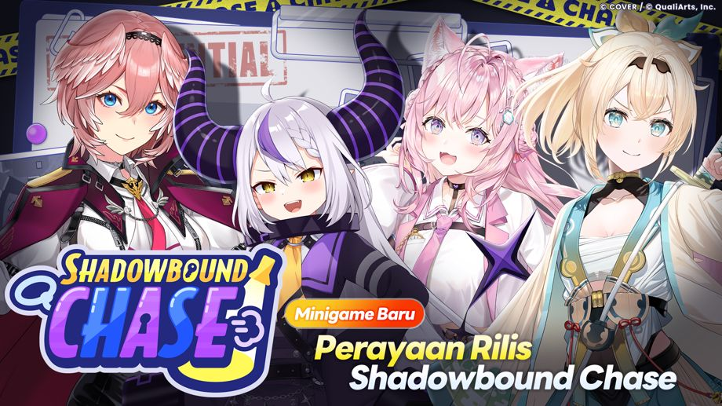

Terima kasih sudah menggunakan layanan ini.
Ini adalah tim operasional "hololive Dreams."
2026-08-28 11:00:00: Pembaruan ke Ver.1.1.0 telah dilakukan.
Mini-game Baru "Shadowbound Chase" telah dimulai!

Mini-game Baru "Shadowbound Chase" telah dimulai!
Shadowbound Chase adalah mini-game di mana dua tim akan berkompetisi. Tim Jahil yang menjadi buronan dan Tim Patroli yang akan menangkap mereka.
Detail dapat dilihat di [Pengumuman] → [Daftar] → [Mini-game Baru "Shadowbound Chase"].
Pembaruan Lainnya
◆Peningkatan Jumlah Perolehan Berbagai Item
Berdasarkan masukan yang kami terima dari para pemain, kami telah menyesuaikan jumlah perolehan item seperti Diamond Merah dan berbagai material upgrade.
- Mulai 2026-09-01 05:00:00, tambahan hingga maksimum 1.000 Diamond Merah akan dimasukkan ke dalam Free Pass.
- Jumlah hadiah material pengembangan yang diperoleh dari Live telah ditingkatkan agarpengembangan anggota lebih mudah dilakukan.
-
- Meningkatkan jumlah perolehan Lesson Pt dan Hologold.
- Meningkatkan jumlah perolehan (drop rate) untuk berbagai jenis Manik.
- Meningkatkan secara signifikan jumlah perolehan (drop rate) untuk berbagai jenis Kristal.
- Menambahkan Live Boost ke dalam penukaran Holosticker dan Penukaran Holosticker Spesial.
- Batas penukaran bulanan Hololium untuk Penukaran Holosticker Spesial telah dinaikkan dari 5 menjadi 20.
- Mulai dari event yang diadakan pada 2026-08-29 12:00:00, Koin Mega Sphere kini dapat diperoleh di Toko Penukaran Event.
◆Peningkatan Multiplayer Live.
-
Tingkat kesulitan kini bisa dibatalkan meskipun telah dikonfirmasi.
Pembatalan dapat dilakukan selama masih dalam batas waktu dan sebelum semua peserta memilih tingkat kesulitan serta menyatakan siap. - Pengaturan "Termasuk AUTO" pada layar pemilihan Mode dan pengaturan "AUTO" pada layar tingkat kesulitan kini akan menyimpan serta menerapkan opsi terakhir yang Anda pilih.
◆Optimasi Partitur Kustom
- Bisa menyimpan dan mempublikasi informasi partitur (karya sendiri atau favorit) dalam bentuk gambar.
- Bisa membuka daftar partitur kreator dari halaman info partitur tersebut.
- Partitur milik pemain yang diblokir tidak akan muncul.
- Tekan lama ikon dekorasi not untuk membuka palet warna.
- Tampilan peringatan/pelanggaran kini ditingkatkan dan lebih mudah diakses.
- Kecepatan Notasi kini dapat diatur sebelum Anda melakukan pengaturan thumbnail.
- Bisa menghapus foto thumbnail langsung di layar pengaturan thumbnail.
- Opsi Live kini bisa diatur di layar pengaturan Mode Trial.
- Lebar layar editor kini otomatis mengikuti ukuran layar perangkat.
- Peningkatan sistem deteksi partitur tidak valid.
- Spektrum audio kini akan ditampilkan di mode Buat Notasi (khusus versi Steam).
◆ Pembaruan Lainnya
- Pengaturan dan filter kini disimpan secara terpisah pada Gacha yang Bisa Dipilih.
- Notifikasi saat menyelesaikan aktivitas di Holowork kini tidak akan muncul berulang dalam waktu singkat.
- Memperlonggar batas waktu setelah pemain posisi pertama menyentuh garis finish hingga pertandingan berakhir di Mega Circuit.
-
Penautan Game Center kini tersedia di perangkat iOS.
Layar sign-in akan muncul saat pertama kali membuka aplikasi setelah Ver.1.1.0.
◆Perbaikan Bug
Berikut adalah perbaikan bug yang telah dilakukan:
- Dalam kondisi tertentu, game mengalami lag sesaat setelah Live dimulai di "Live Bersama".
- Dalam kondisi tertentu, layar pemilihan lagu di "Live Bersama" menjadi tidak responsif hingga penghitung waktu mundur mencapai 0.
- Pada Mini-game "Mega Circuit", melakukan tindakan tertentu dapat menyebabkan penentuan garis finish terpicu pada waktu yang tidak seharusnya.
- Di Mini-game "Mega Circuit", karakter dapat memanjat area stage yang tidak seharusnya.
- Di Mini-game "Mega Circuit", karakter respawn di posisi yang tidak sesuai dengan yang seharusnya.
- Jika aplikasi mengalami crash saat memublikasikan Notasi di mode Buat Notasi, lagu tersebut terkadang tidak dapat dipublikasikan lagi.
- Pesan "Parameter tidak valid" muncul pada sebagian pemain saat menyelesaikan Live atau Mini-game.
- Dalam kondisi tertentu, pesan "Parameter tidak valid" muncul saat mengambil hadiah Achievement.
- Dalam kondisi tertentu, pesan "Parameter tidak valid" muncul saat meriset Holomem Board.
- Dalam kondisi tertentu, kursor mouse menghilang dan layar tidak bisa dioperasikan pada layar judul versi Steam.
- Bagi sebagian pemain, game dimulai dengan holomem yang berbeda dari yang dipilih pada tahap "Pilih Holomen" saat memulai game untuk pertama kali.
- Dalam kondisi tertentu, jumlah biaya yang ditampilkan saat membeli level pada Mission Pass terlihat lebih banyak daripada jumlah yang seharusnya.
- Dalam kondisi tertentu, beberapa Achievement yang berkaitan dengan pembukaan lagu mengalami kemajuan meskipun syarat pencapaiannya belum terpenuhi.
- Pada hasil akhir Live, "Dream EXP"—yang seharusnya diperoleh tanpa terpengaruh skor akhir—ditampilkan secara ganda sebagai bagian dari hadiah skor.
- Pada lagu "Kyun Kyun MIKO Kyun kyun♡" tingkat kesulitan "EXPERT", terdapat satu not yang letaknya tergeser dari posisi yang seharusnya.
- Suara percakapan yang seharusnya baru terbuka setelah member tersebut diperoleh, ternyata dapat diputar.
- Perbaikan bug ringan lainnya.